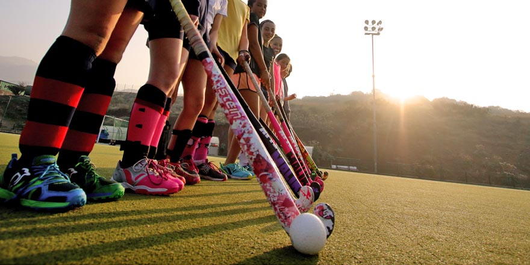

¿Qué es el hockey sobre césped?
El hockey sobre césped, también conocido como hockey de campo, es un deporte de equipo que se juega en un campo rectangular de césped natural o sintético. Se considera uno de los deportes más antiguos del mundo y ha crecido en popularidad tanto a nivel amateur como profesional.